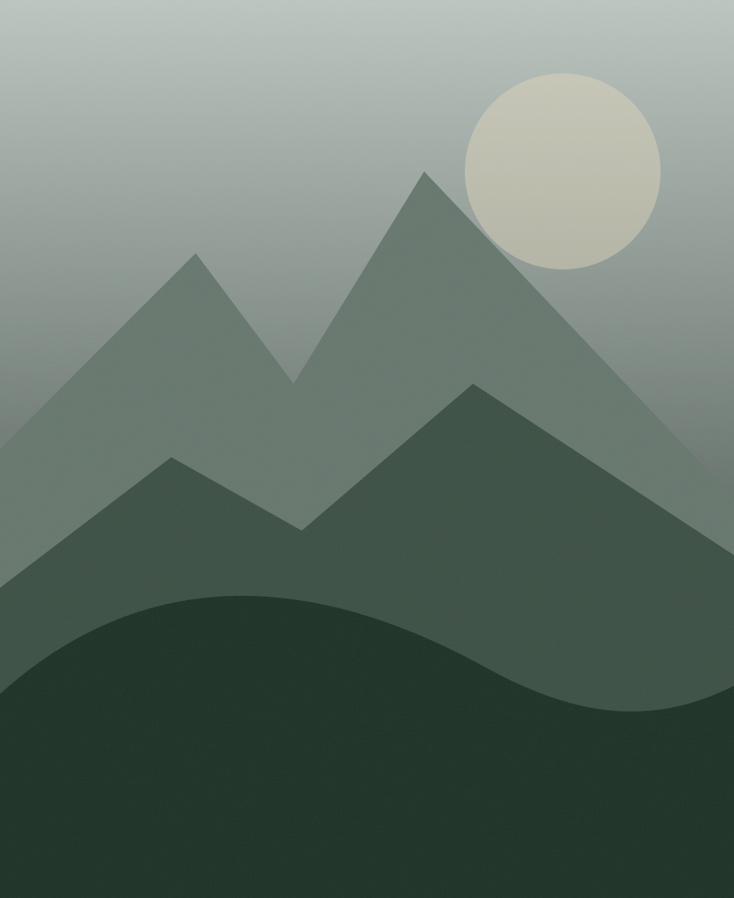

RV-44 · Página editorialVale das
Vale das
Araucárias.
Uma pausa entre o centro e a parte mais aberta da serra, pensada para quem quer reduzir o ritmo por uma hora.

Duração45–60 min
AmbienteAo ar livre
Melhor encaixeManhã ou fim de tarde
Hoje22°C · clima demo
Por que este lugar entra no caminho?
O valor aqui não está em “cumprir uma atração”, mas em criar um intervalo visual e físico dentro da viagem. O mirante funciona bem entre dois blocos mais intensos, principalmente quando a viagem pede um pouco de silêncio.
Na plataforma, contexto editorial, duração, condições práticas e relação com o restante do roteiro aparecem juntos. A página não tenta competir com uma ficha de mapa.
Deslocamento12 min desde o centro
AcessibilidadeTrecho principal acessível
Evento próximoFeira local · 16h
Experiências próximas
Continue sem quebrar o ritmo.
Café, cultura e pequenas compras podem entrar depois do mirante sem exigir um grande deslocamento.
Ver opções próximas